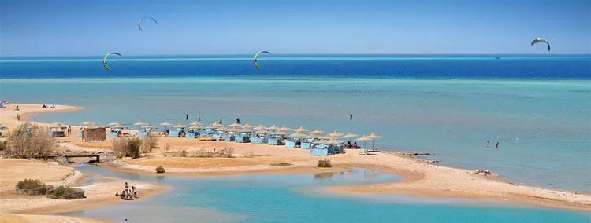
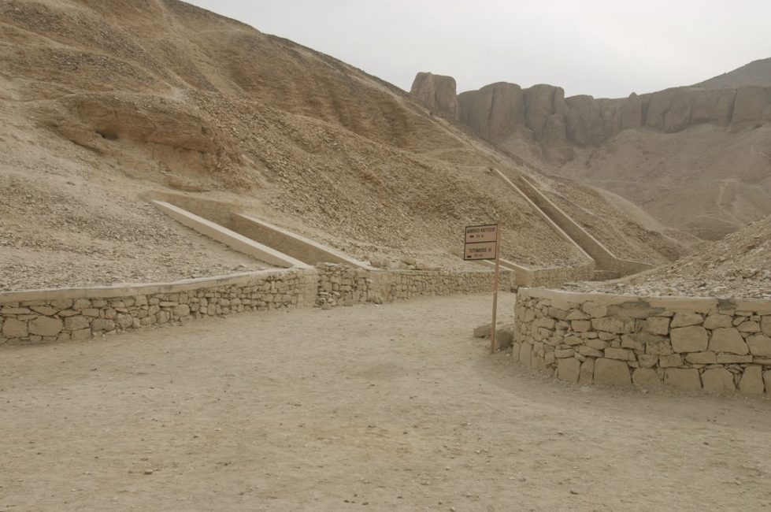
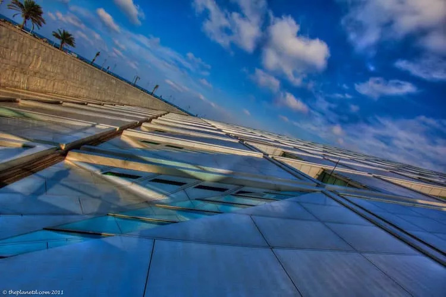
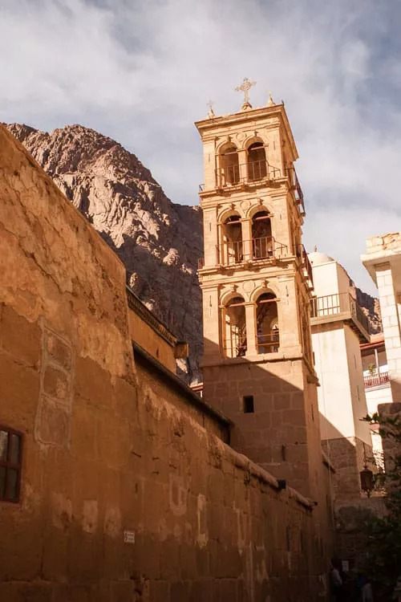
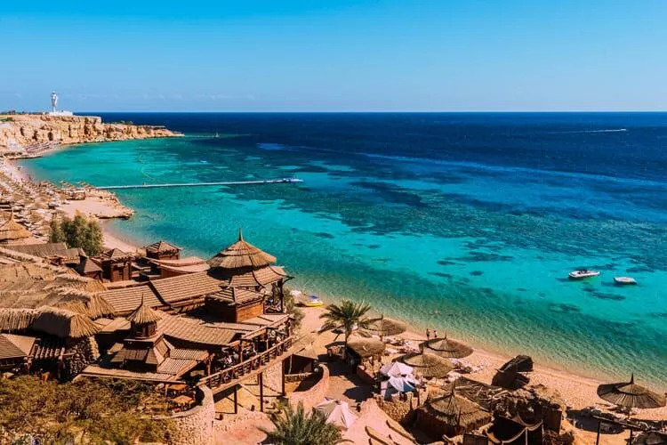
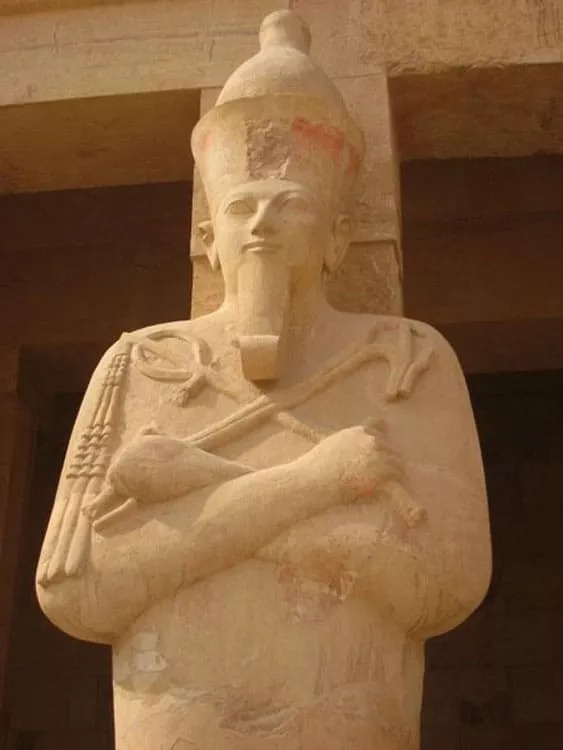
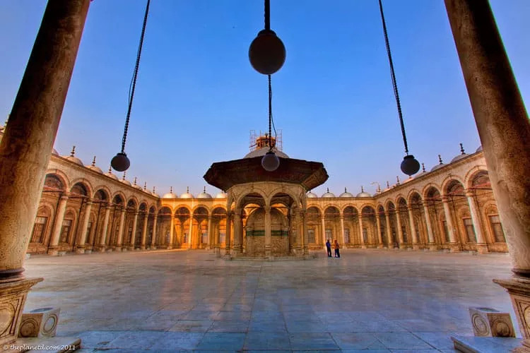

A page about the country I live in
Three places I want to show you:
- The Valley of the Kings
- The Library of Alexandria
- Saint Catherine's Monastery

The Valley of the Kings

Kings were buried here more than three thousand years ago. Sixty-three tombs have been found so far, and people are still digging.
The Library of Alexandria
The old library burned down. The new one opened in 2002 and can hold eight million books.

Saint Catherine's Monastery

It sits at the foot of Mount Sinai and has been open every day for about 1,500 years. It is one of the oldest working libraries in the world.
Something someone said about my country:
"Man fears time, but time fears the pyramids."
- an Arabic proverb.
Come and see it



Read more on Wikipedia.